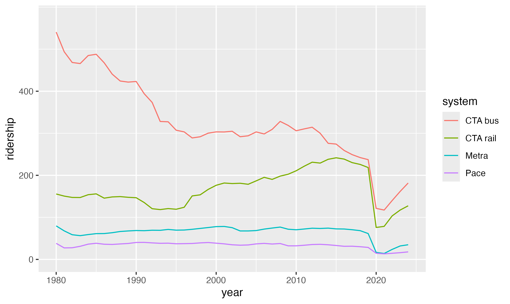
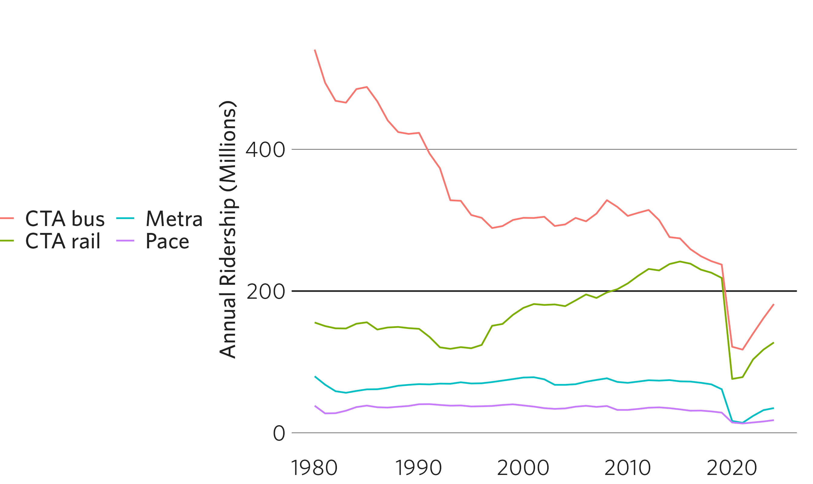
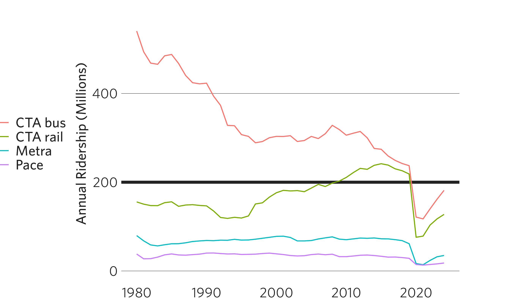
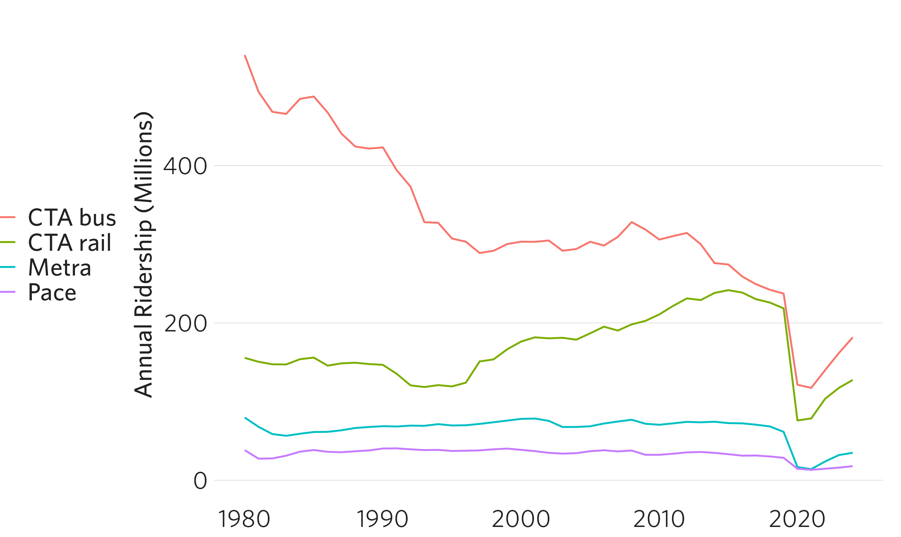
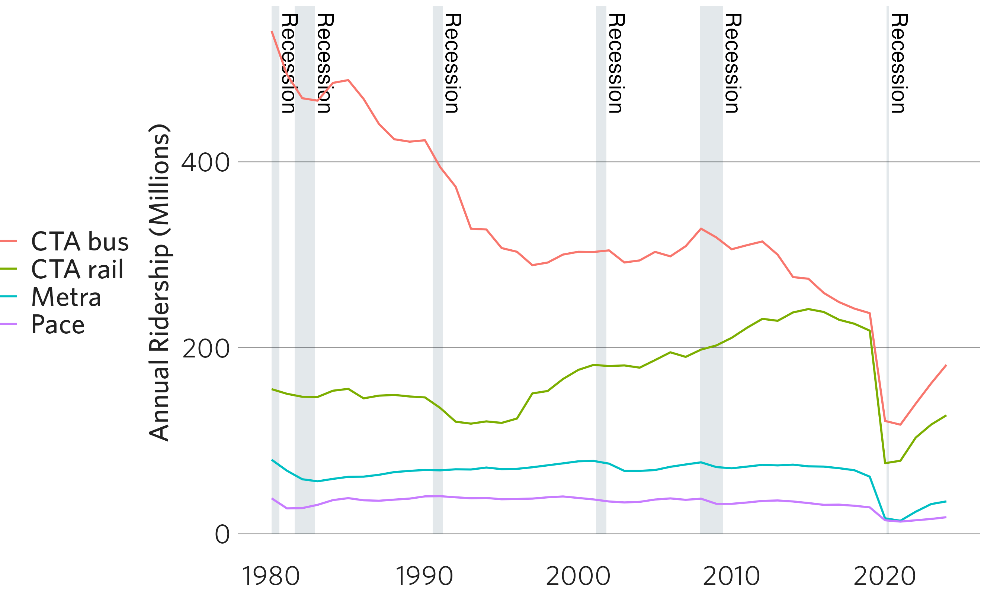
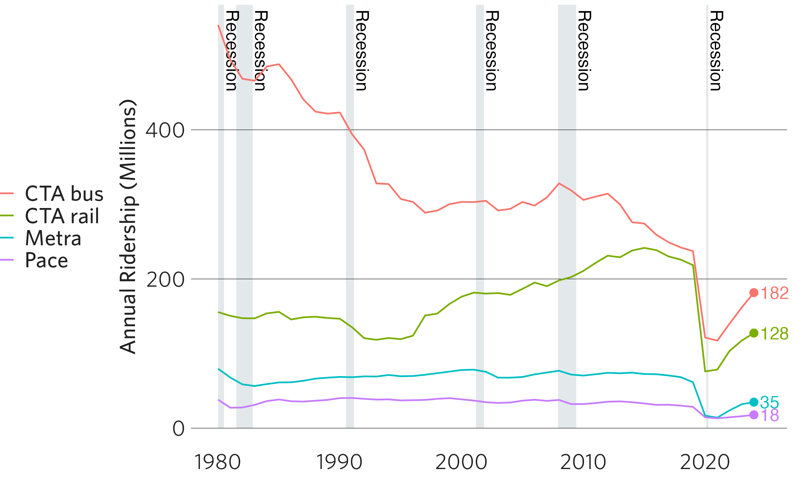
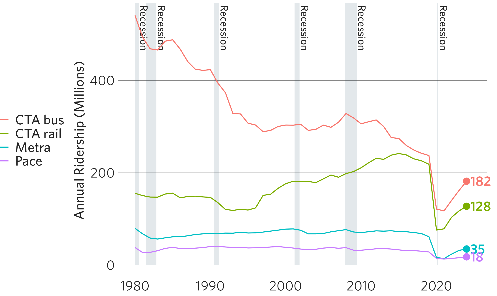
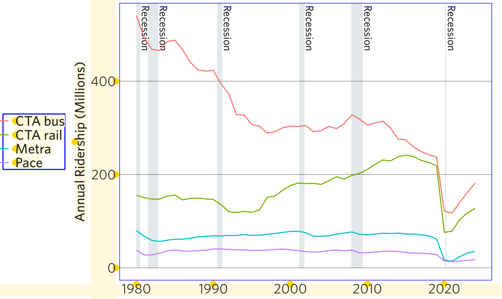

This vignette summarizes the basic formatting that the cmapplot package can add to a ggplot(), including via the functions theme_cmap(), geom_recessions(), geom_text_lastonly(), and apply_cmap_default_aes(). The vignette relies on one of the sample CMAP datasets included with the package.
Let’s start with a basic time series line graph, drawn using ggplot2’s default theme (theme_grey()). We’ll save this as p for later, but keep the actual data geom (in this case, geom_line()) separate due to how ggplot2 layers geoms.
# load tidyverse (which includes ggplot2) and cmapplot
library(tidyverse)
library(cmapplot)
# clean up dataset
df <- transit_ridership %>%
filter(system != "pace_ada") %>%
mutate(system = recode_factor(system,
cta_bus = "CTA bus",
cta_rail = "CTA rail",
metra = "Metra",
pace = "Pace"
))
# build plot
p <- ggplot(data = df,
mapping = aes(x = year, y = ridership, color = system)) +
scale_y_continuous(breaks = c(0, 200, 400),
limits = c(-1, 575))
p + geom_line()
To add basic CMAP design elements to the plot, add theme_cmap() like you would any other ggplot2 theme.
p + geom_line() + theme_cmap()The CMAP theme function has a variety of easy built-in modifiers. For example, by default the x- and y-axis labels are turned off, but this can be overridden. The help file ?theme_cmap describes how to make these changes.
For example, theme_cmap() can be used to to add a strong horizontal or vertical line (such as to delineate zero or some other threshold). Note that, on standard-resolution (non-retina) displays, hline and vline may appear as the same thickness as the plot’s gridlines when viewed within R. When exported as a vector file (or raster at high enough resolution) the difference becomes apparent.
When using hline and/or vline, it is important to place theme_cmap() before the primary data geom. This is because the hline drawn by theme_cmap() is a geom, and ggplot2 layers geoms in the order they are added to the plot. This ordering allows the CTA rail line to be drawn on top of the hline.
p + theme_cmap(ylab = "Annual Ridership (Millions)",
hline = 200, # may not be immediately visible
legend.max.columns = 2) +
geom_line()
theme_cmap() also allows users to easily add tick marks on the x- and/or the y-axes, using the argument axisticks. Note that here, some additional manipulation of the y-axis scale is necessary for the axis ticks to touch the lowest horizontal gridline (this is to override ggplot2’s default behavior, which expands the scale slightly beyond the extent of the data for aesthetic reasons).
p + geom_line() +
scale_y_continuous(breaks = c(0, 200, 400),
limits = c(-1, 575),
expand = c(0, 0)) +
theme_cmap(ylab = "Annual Ridership (Millions)",
axisticks = "x")The package contains a list of default values (cmapplot_globals$consts) that control various plotting constants. Most of these impact the function finalize_plot(), but a few impact theme_cmap(). For a complete description of these constants, see ?cmapplot_globals.
The most important at this stage is margin_panel_r, which controls the distance between the right side of the plot and the right side of the plotting window. Depending on the length and location of your right-most x axis label, you may need to expand this value beyond it’s default. These consts can be modified in the overrides argument:
p + scale_x_continuous(labels = c("1980", "1990", "2000", "2010", "A very long label")) +
theme_cmap(ylab = "Annual Ridership (Millions)",
hline = 200,
overrides = list(margin_panel_r = 50, # the most likely override in theme_cmap()
lwd_strongline = 3)) +
geom_line()
In addition, any ggplot2 theme element can also be modified directly in theme_cmap() by passing valid arguments from the ggplot2::theme() function. In the following example, the addition of panel.grid.major.y = element_line(color = "light gray") modifies the default color of a horizontal grid line, changing it from black to light gray.
p + theme_cmap(ylab = "Annual Ridership (Millions)",
panel.grid.major.y = element_line(color = "light gray")) +
geom_line()
The cmapplot package also includes two custom geoms that allow the user to easily add common elements used in CMAP plots that would be otherwise difficult to program.
The function geom_recessions(), allows for the addition of rectangles (and text, if desired) representing US economic recessions. Similar to the hline example above, geom_recessions() should be added before the plot’s primary geom (geom_line()) so that lines are drawn on top of recession rectangles.
ggplot() always draws geoms on top of base plot elements like gridlines. The default fill and alpha values for geom_recessions() are the most transparent way possible to achieve CMAP palette color #002d49 when drawn on a white background — thus impacting the color of the gridlines as little as possible.
This function relies on the National Bureau of Economic Research’s definitions of recessions. Details on how to update these dates, as well as how to provide your own, can be found in geom_recessions() and update_recessions(). If the most recent recession has not yet been declared over (as is the case in June 2021), the function will default to displaying this ongoing recession from its beginning through the end of the visualized data. If this is not desired (for example, if the visualization is of a projection far into the future), users can remove this ongoing recession by setting show_ongoing = FALSE.
q <- ggplot(data = df,
mapping = aes(x = year, y = ridership, color = system)) +
geom_recessions(ymin = 0) +
geom_line() +
theme_cmap(ylab = "Annual Ridership (Millions)")
q
The function geom_text_lastonly() allows the user to label only the final point in a time series. In addition to applying the label, this function can also highlight the final point via an implicit geom_point(). Like geom_text(), the value of the label can be passed via the mapping argument, either in the top-line ggplot() or in geom_text_lastonly().
Due to ggplot2’s underlying structure, geom_text() labels are clipped by the plot’s default extent. Often, the right side of the plot will need to be expanded — or plot clipping turned off — for correct display of these labels. ?geom_text_lastonly describes a number of methods to account for this.
q <- q + geom_text_lastonly(mapping = aes(label = round(ridership, digits = 0)),
add_points = TRUE,
nudge_x = 0.5) +
coord_cartesian(clip = "off")
q
By default, date axes with units in years display the full year for each axis label (e.g., 2000, 2001, 2002, 2003). In some cases, users may want to abbreviate some, but not all, of these axis labels, such as by maintaining the full year for the first label and abbreviating subsequent labels (e.g., 2000, ’01, ’02, ’03). The function abbr_years enables users to do so, defaulting to abbreviating all years but the first.
This function uses syntax similar to those in the scales::label_*() family, and can be applied to a plot via the labels parameters of the ggplot2::scale_x_continuous or ggplot2::scale_x_date() functions (or their y-axis counterparts). Users can specify which years should be abbreviated by either their value (using full_by_year) or their position on the axis (using full_by_pos). More details are available in ?abbr_years.
p + geom_line() + theme_cmap() +
scale_x_continuous(labels = abbr_years(full_by_year = c(2000)))Every ggplot2 “geom” has default aesthetics that cannot be modified by a ggplot2 theme (and therefore, cannot be modified by theme_cmap()). Notice, for example, that the text drawn in the plot via geom_text_lastonly() and geom_recessions() still appears in Arial (R’s default font), although the legend and axis fonts appear in Whitney. This is automatically corrected in finalize_plot(). However, if you’d like to see these impacts at this stage, you can override ggplot2’s default aesthetics for line and text geoms with CMAP defaults via apply_cmap_default_aes().
apply_cmap_default_aes()
#> Aesthetic defaults overridden in the current session for the following Geoms:
#> Label, Line, Text, TextLast, PointLast, RecessionsText
#> To undo this change, run `unapply_cmap_default_aes()`.
q
It is important to note that this change is “sticky” for the duration of the session, but you can reverse the change with unapply_cmap_default_aes(). This function will revert to whatever the default aesthetics were before cmapplot was loaded.
In addition, theme_cmap() provides a debug mode in which it draws outlines around the rectangular elements in the plot. This can help the user understand what is being drawn and identify additional modifications that they might want to make via overrides or ggplot2::theme() arguments:
ggplot(data = df,
mapping = aes(x = year, y = ridership, color = system)) +
geom_recessions(ymin = 0) +
geom_line() +
theme_cmap(ylab = "Annual Ridership (Millions)",
debug = TRUE)